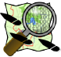

|
Nav Loading...
|

JPSTrack: Android OSM TrackerWhat?This program collects data for inclusion into OpenStreetMap, the free, editable map of the world. This is NOT a Navigation application (there are many of those in the Market already). It is different from the "Vespucci" app in that, unlike Vespucci, it does NOT try to be an OSM editor. In the author's experience, most current Android devices do not have the I/O capability to do this job well. I recommend uploading the files (from /sdcard/jpstrack) to a desktop PC and runnnig the JOSM editor or even using the web-based editor on the OSM site. JPSTrack differs from Google's own My Tracks in that it is much more narrowly focused: it only records GPX tracks for OSM. It allows you to upload GPX tracks directly to OSM. The program collects data once you press the Start button, and goes until you PAUSE or SAVE. PAUSE can be resumed with the RESUME button. The SAVE button ends a run and closes the file. There is also voice notes, text notes, and pictures. All are saved, along with the GPX files, in your device's external storage, commonly /sdcard/jpstrack.android (and changeable in Preferences). The name is historical; the program was originally written in Java, and the name 'gpstrack' was already in use by another program. Feedback/SupportAlways welcome. Please use this contact form. JpsTrack is made for Android releases as old as Android 1.6+, so it runs on just about every device out there (we still test it on 2.x physical devices). This is an early release of the software; please see the Release Notes before you decide it's buggy; we know about most of the bugs that are in this version and will fix them as we have time... Where?You can get the current stable version from Google Play. You can often find a beta version here. You can also find a stable version repackaged in BlackBerry App World (Playbook and BB10, not for BB5/6/7 since RIM abandoned developers on those platforms in moving to BB10). OSM WikiThere is also a JPSTrack page at the OpenStreetMap Wiki. Source Code?This is a free and open source application. Source is provided for most uses, but you may not distribute the app back to Google Play Store or other market, as that would lead to fragmentation. Code is at https://github.com/IanDarwin; you need the two repos jpstrack and jpstrack.android. Why two modules? Each module is an Eclipse project. The code is based on an earlier JavaSE version of jpstrack. Since you can't really have both a JavaSE and an Android project in the same Eclipse project, and since I refuse to copy-and-paste entire files, I left the original and just refer to it. The Android Eclipse plug-in used to be smart enough to include the needed files from the referenced program when it runs "dx" (.class to .dex converter) and include them in the generated APK package. Now it doesn't do so, hence there is a Maven pom.xml in jpstrack to produce the required jar file. |